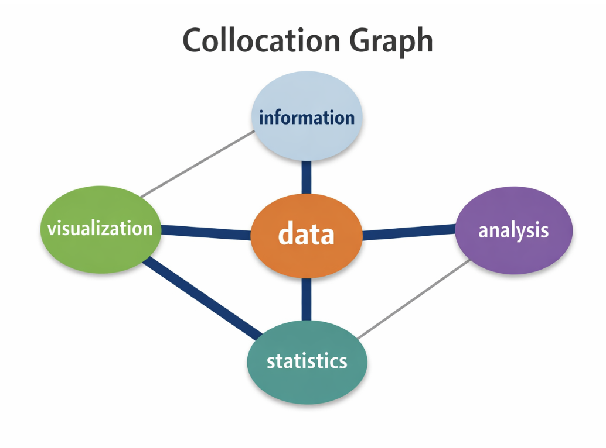
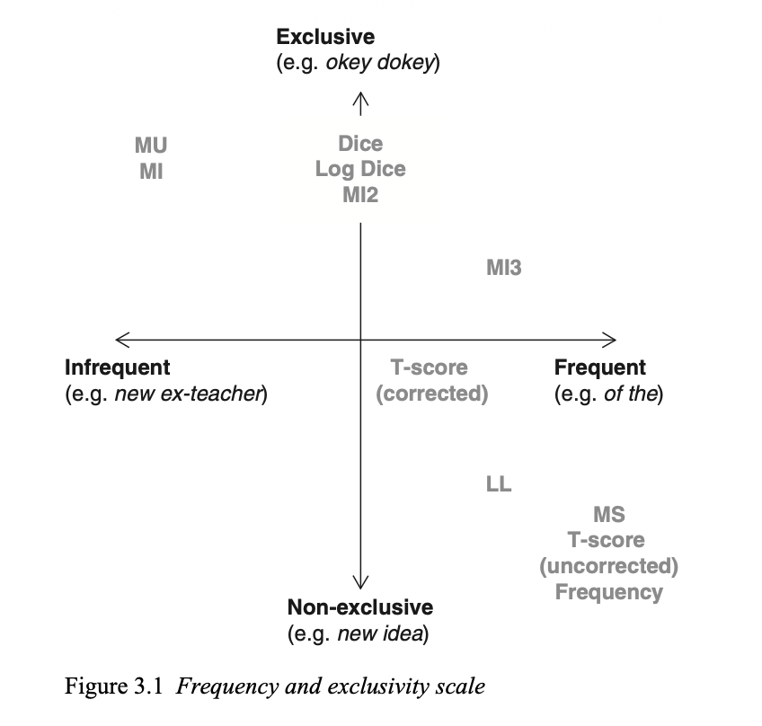

# If you are colab, un-comment the pip install below.
# This will not be necessary on DeepNote or your local installation
#!pip install data401_nlpLab 2 - Leveraging spaCy for Comparative Textual EDA (Part 2)
In the last lab you learned about: - Text preprocessing including vocabulary, frequency counts, and analyses. - Raw frequency, normalization, and relative measures for comparing different groups. - Dispersion showing where language appears in the corpus. - Distributional patterns - observable in visualizations like KWIC.
Objectives: - Analyze distributional patterns in text using normalized frequency counts to compare language use across groups. - Operationalize word association through bigrams and collocations, and explain how association measures differ from raw frequency. - Compute and interpret Pointwise Mutual Information (PMI) to identify exclusive or slogan-like word pairings, while understanding its bias toward rare events. - Apply linguistic annotation with spaCy (POS tagging and NER) to explore grammatical and entity-level patterns in text. - Evaluate the limits of linguistic annotation on social media data, recognizing noise introduced by hashtags, emojis, and non-standard syntax. - Use sampling and normalization responsibly to make comparisons across corpora of different sizes. - Reflect on how statistical association methods connect to modern NLP and LLMs, particularly how embeddings internalize frequency and surprise signals.
Useful References:
- Brezina, Vaclav (2018). Statistics in Corpus Linguistics: A Practical Guide.
- SpaCy API. https://spacy.io/api
- Possibility and Necessity. Chapter 16-16.2 in Analyzing Meaning - An Introduction to Semantics and Pragmatics (Kroeger)
Note about this lab: your focus should be on speculating and introspecting on observed phenomena. You’ll be asked to consider how or why an LLM can do things that pose challenges for traditional NLP and statistical methods. As before, think and respond before asking an AI model for insight. We’ll go much more deeply into how things work as we go in this class.
While this lab is labeled EDA part 2, non of it is strictly needed by your EDA. This lab should stimulate your thinking about EDA beyond reporting relative frequencies.
Load libraries and models
# Environment (must run first)
from dotenv import load_dotenv
load_dotenv()
import data401_nlp
print(data401_nlp.__version__)
# Core libs
import os
import re
from collections import Counter
import numpy as np
import pandas as pd
import matplotlib.pyplot as plt
import math
import spacy0.0.6
0.0.7# This checks to make sure your SUBMIT_API_KEY is present
print("SUBMIT_API_KEY present:", bool(os.getenv("SUBMIT_API_KEY")))from data401_nlp.helpers.env import load_env
from data401_nlp.helpers.llm import make_chat, LLM_MODELS
load_env()
DEFAULT_MODEL = LLM_MODELS[0] # Assumes Claude key... adjust if needed.
print("Selected model:", DEFAULT_MODEL)
chat = make_chat(DEFAULT_MODEL)Selected model: anthropic/claude-sonnet-4-5# You must explicitly opt in, if you want to use and run cells with external LLM calls
ENABLE_LLM = Truedef llm_status(chat_fn):
if not ENABLE_LLM:
return "disabled"
try:
chat_fn("ping", max_tokens=1)
return "ready"
except Exception:
return "misconfigured"
print("LLM status:", llm_status(chat))LLM status: readydef make_and_test_chat(model_name):
if not ENABLE_LLM:
return None # silent no-op
try:
chat = make_chat(model_name)
chat("ping", max_tokens=1)
return chat
except Exception:
return None # silent faildef llm_available():
return ENABLE_LLM and chat is not NoneSet up the Dataframe from last week
from data401_nlp.helpers.spacy import ensure_spacy_model
def get_nlp():
return ensure_spacy_model("en_core_web_sm")
nlp = get_nlp()
df1 = pd.read_csv("data/covidisreal_OR_wearamask_hashtag.csv")
df2 = pd.read_csv("data/covidhoax_OR_notomasks_hashtag.csv")
df1['group'] = 'promask'
df2['group'] = 'antimask'
df = pd.concat([df1, df2], ignore_index=True)
df.groupby('group').head(4)✅ spaCy model 'en_core_web_sm' loaded successfully| created_date | hashtags | num_hashtags | tweet_length | tweet_text | group | |
|---|---|---|---|---|---|---|
| 0 | 2020-08-31 02:08:31 | 2020sucks trumpisscar ihateithere wearamask | 4 | 90 | #2020sucks #trumpisscar #ihateithere #wearamas... | promask |
| 1 | 2020-08-31 02:07:58 | antimasker antimasking DOJ pandemic | 4 | 137 | This is probably one of the most ridiculous of... | promask |
| 2 | 2020-08-31 02:07:28 | wearamask maskuphoosiers | 2 | 69 | Just, like, do it. #wearamask #maskuphoosiers ... | promask |
| 3 | 2020-08-31 02:07:16 | NaN | 0 | 140 | So one day a guy will be bragging how he didn’... | promask |
| 5000 | 2020-08-31 02:03:58 | COVID19 covidhoax | 2 | 125 | 6% Of all #COVID19 Deaths were from just the v... | antimask |
| 5001 | 2020-08-31 02:03:35 | COVID19 | 1 | 140 | #COVID19 is a hoax. Fuck masks. If you don’t ... | antimask |
| 5002 | 2020-08-31 02:02:55 | COVID19 CovidHoax | 2 | 148 | @ProfPCDoherty There was no need to shut the b... | antimask |
| 5003 | 2020-08-31 02:01:45 | CovidHoax | 1 | 140 | #CovidHoax is over... Let's OPEN the world and... | antimask |
def clean_text(text):
if not isinstance(text, str):
return ""
return text.lower().replace("\n", " ")
def process_tweet(text):
nlp = get_nlp()
return nlp(clean_text(text))df["clean_text"] = df["tweet_text"].apply(clean_text)df.groupby('group').head(3)| created_date | hashtags | num_hashtags | tweet_length | tweet_text | group | clean_text | |
|---|---|---|---|---|---|---|---|
| 0 | 2020-08-31 02:08:31 | 2020sucks trumpisscar ihateithere wearamask | 4 | 90 | #2020sucks #trumpisscar #ihateithere #wearamas... | promask | #2020sucks #trumpisscar #ihateithere #wearamas... |
| 1 | 2020-08-31 02:07:58 | antimasker antimasking DOJ pandemic | 4 | 137 | This is probably one of the most ridiculous of... | promask | this is probably one of the most ridiculous of... |
| 2 | 2020-08-31 02:07:28 | wearamask maskuphoosiers | 2 | 69 | Just, like, do it. #wearamask #maskuphoosiers ... | promask | just, like, do it. #wearamask #maskuphoosiers ... |
| 5000 | 2020-08-31 02:03:58 | COVID19 covidhoax | 2 | 125 | 6% Of all #COVID19 Deaths were from just the v... | antimask | 6% of all #covid19 deaths were from just the v... |
| 5001 | 2020-08-31 02:03:35 | COVID19 | 1 | 140 | #COVID19 is a hoax. Fuck masks. If you don’t ... | antimask | #covid19 is a hoax. fuck masks. if you don’t ... |
| 5002 | 2020-08-31 02:02:55 | COVID19 CovidHoax | 2 | 148 | @ProfPCDoherty There was no need to shut the b... | antimask | @profpcdoherty there was no need to shut the b... |
Preface - Distributional Analysis
Section A on word association patterns will introduce measures that are not intended to be part of your EDA project. Instead, it sets up how we use statistics to tease out patterns in language. These patterns are the thread that connect linguistic analysis, to traditional NLP, to modern LLMs. We’ll come back to the same statistical principles repeatedly through this course.
Association patterns make explicit distributional analysis at a very local level. Distributional analysis rest on a single, core idea: A word’s meaning (or function) is reflected in how it is distributed across contexts. Two groups may share the use of a set of words, and yet those words take on different meaning in different contexts.
For example, in the promask context: ‘mask’ occurs with words such as protect, safe, others, community, health. In the antimask context, it appears with words such as forced, control, lie, hoax, freedom. Although both groups use the word “mask” frequently, its meaning is shaped by the associative context in which it appears. Neither is right nor wrong – this is an observation about how language is used… which is observable in the data. Meaning is not just about which words are used, but about the contexts in which they are used.
In section A, we’ll use this idea to observe differences in how language is used between two groups.
A - Word Association Patterns
Before we move on to playing with other spaCy pipeline capabilities on this data, let’s talk about the utility of word associations to reveal patterns in data. These techniques are used to reveal patterns in language. Very similar statistical methods are used to build word embeddings, which we’ll explore soon. Embeddings are a key tool for LLMs.
What I hope you draw from this is that we have more tools at our disposal for looking at patterns in language data when it comes to squishy questions around the social use of language such as attitude, opinion, ideology, power, etc. If statistics excites you, this is an interesting area of study and could be valuable tool in investigative journalism, mental health, social justice, etc.
At the heart of of statistical methods for studying language use is co-occurence and frequencies of words and word patterns.
A basic way to study co-occurrence patterns is through bigrams, which are adjacent pairs of tokens. Bigrams define what counts as a co-occurrence.
Once we have bigram counts, we can ask whether two tokens appear together more often than we would expect by chance, given their individual frequencies.
The underlying assumption is token independence: if two words are unrelated, the probability of seeing them together should be predictable from their unigram frequencies. Association measures test departures from this assumption. Thus association measures evaluate whether that co-occurence is statistically meaningful.
Statistical such as Pointwise Mutual Information (PMI), t-score, or log-likelihood quantify this likelihood of association by comparing observed bigram frequencies to expected frequencies under an independence assumption.
While this lab is too long to go into depth about any of these inferential techniques, let’s focus on normalizing our frequencies and incorporate sampling. If your data set is large, this is what you will need to do. Below, we’ll reduce the number of documents to 1000. Sampling is a great way to work out ideas before you do a full analysis.
nlp = get_nlp()
df["token_count"] = df["clean_text"].apply(
lambda text: len(
[tok for tok in nlp(text) if not tok.is_space]
)
)✅ spaCy model 'en_core_web_sm' loaded successfully# sample rows *with* group so alignment is preserved
MAX_DOCS = 1000
df_s = (
df[["clean_text", "group", "token_count"]]
.dropna(subset=["clean_text", "group"])
.sample(n=min(MAX_DOCS, len(df)), random_state=42)
.reset_index(drop=True)
)
nlp = get_nlp()
docs_s = list(nlp.pipe(df_s["clean_text"], batch_size=1000))
docs_promask = [d for d, g in zip(docs_s, df_s["group"]) if g == "promask"]
docs_antimask = [d for d, g in zip(docs_s, df_s["group"]) if g == "antimask"]✅ spaCy model 'en_core_web_sm' loaded successfullyBelow, let’s recall how we normalize frequencies to compare patterns across groups. I played around with removing things we’re less interested in for this analysis such as punctuation and spaces. Freel free to play around with this, as well! When you filter out text like this, you must report that you did so. There will be an effect on your both word counts and statistics.
# Get word frequencies
def get_word_freqs(texts):
freqs = Counter()
for text in texts:
doc = nlp(text)
for tok in doc:
if not tok.is_punct and not tok.is_space:
freqs[tok.text.lower()] += 1
return freqs
nlp = get_nlp()
promask_freqs = get_word_freqs(df[df['group']=='promask']['clean_text'])
antimask_freqs = get_word_freqs(df[df['group']=='antimask']['clean_text'])✅ spaCy model 'en_core_web_sm' loaded successfully# Let's compare by frequency by normalizing per 1000 tokens
# Get totals first
total_promask = sum(promask_freqs.values())
total_antimask = sum(antimask_freqs.values())
norm_promask = {w: (f / total_promask) * 1000 for w, f in promask_freqs.items()}
norm_antimask = {w: (f / total_antimask) * 1000 for w, f in antimask_freqs.items()}from collections import Counter
import pandas as pd
pd.DataFrame(
Counter(norm_promask).most_common(20),
columns=["token", "rate_per_1000"]
)| token | rate_per_1000 | |
|---|---|---|
| 0 | wearamask | 26.855802 |
| 1 | the | 24.659245 |
| 2 | to | 22.404883 |
| 3 | a | 20.358617 |
| 4 | and | 14.901906 |
| 5 | i | 12.728471 |
| 6 | you | 12.497254 |
| 7 | of | 11.768922 |
| 8 | in | 11.086833 |
| 9 | is | 10.867178 |
| 10 | mask | 10.138846 |
| 11 | for | 9.595487 |
| 12 | it | 8.809350 |
| 13 | this | 8.057897 |
| 14 | are | 7.109909 |
| 15 | we | 6.936496 |
| 16 | on | 5.976948 |
| 17 | that | 5.826657 |
| 18 | your | 5.410467 |
| 19 | do | 5.329541 |
pd.DataFrame(
Counter(norm_antimask).most_common(20),
columns=["token", "rate_per_1000"]
)| token | rate_per_1000 | |
|---|---|---|
| 0 | the | 39.600619 |
| 1 | covidhoax | 29.025454 |
| 2 | to | 19.040923 |
| 3 | is | 18.112783 |
| 4 | a | 15.609619 |
| 5 | of | 14.259598 |
| 6 | and | 11.897061 |
| 7 | you | 11.531430 |
| 8 | this | 11.503305 |
| 9 | in | 11.137674 |
| 10 | are | 9.872029 |
| 11 | it | 9.309520 |
| 12 | i | 8.465757 |
| 13 | that | 8.409506 |
| 14 | for | 7.875123 |
| 15 | they | 6.581353 |
| 16 | all | 6.131346 |
| 17 | not | 5.878217 |
| 18 | we | 5.681339 |
| 19 | have | 5.343833 |
The normalized word frequencies above are included to reinforce how corpus size and pre-processing affects comparisons; the collocation statistics below rely instead on raw unigram and bigram counts, which are required for computing association measures like PMI.
Frequency tells us which words are common, but it does not tell us which words tend to appear together. Two words can be frequent without being meaningfully related. To capture relationships between words, we need to look at co-occurrence.
Collocations
While comparing termlists against other term lists is interesting, let’s shift to looking at the co-occurence of words with other words. The simplest way to do this is to look at bigrams.
Bigrams in our context are pairs of words or tokens. Here’s an example below. We’ll need to use bigrams and unigrams (single word/token frequencies) for some of the statistics below.
nlp = get_nlp()
doc = nlp("I love wearing masks")
bigrams = [(doc[i].text, doc[i+1].text) for i in range(len(doc)-1)]
print(bigrams)✅ spaCy model 'en_core_web_sm' loaded successfully
[('I', 'love'), ('love', 'wearing'), ('wearing', 'masks')]Collocations are sequences of words that co-occur unusually frequently and that, over time, start to take on a meaning or a salience that resists the token sequence being broken down into its individual parts.
Often words that start off as collocations become increasingly fixed as lexical items, especially when they are used with great frequency. This process is called lexicalization.
For example, as noun-noun collocations such as ‘ice chest’, ‘data base’ or ‘war game’ become increasingly cemented in the vocabulary of English, even native speakers pause to wonder ’Does ice-chest have a hyphen? Is database all one word? That is a sign of the increasing lexicalization of the collocation.
In some cases, you can introspect about whether a collocation has a non-compositional meaning by trying to substitute it with a single synonym, such as ‘cooler’ for ‘icechest’ or ‘assassin’ for ‘hit man’ (or is that hitman?) Collocations can consist of numerous combinations of parts-of-speech, but most have in common the somewhat idiosyncratic nature of their meaning, which can exhibit differing degrees of compositionality.
This is a challenge for second language learners, and websites such as 7esl devote some effort to helping people master them. For the purposes of natural language processing, when setting out to answer an analytic question with natural language data, it is important to consider whether and to what degree identifying collocations is relevant and necessary. How you treat collocations can affect everything from first order frequency counts to the quality of word embeddings, which are so widely used in contemporary machine learning.
n-grams (also written ngrams), are collcations. We’ll talk about this term many times throughout the course, because n-grams are so central to language modeling in NLP. The n in n-gram is meant to represent a variable of any length. The gram in n-gram is a graphical representation of some chunk of language, which might be characters, morphemes, tokens, or words. Some of the shorter n-grams have special names, such as bigram or trigram, which are 2-grams and 3-grams, respectively.
Collocation measures of words are a kind of association measure that calculates the strength of association between words. There are many different association measures, but they all work on the same basic principle: they compare the observed frequency of a pair of words with the expected.
Useful to data scientists are the collocation graphs. Collocation graphs visually map which words commonly appear together in language. By treating words as nodes and their relationships as edges, they help us see patterns of meaning, usage, and discourse structure.

For collocation analysis (word associations within a corpus), these are fairly typical statistics that we can use. I won’t go into how these are calculated, since this is just a demonstration.
There are a number of different statistics. To choose one, you have to define the type of collocation that you are interested in. Here is a chart from page 74 in Brezina’s “Statistics in Corpus Linguistics” book.

This image highlights that some terms occur more frequently together, and some words predominantly occur only with one another.
All of these tests start with the same idea - what gets weighted: surprise vs frequency. They all compare observed co-occurence to expected co-occurence under independence. But they differ in how much they pernalize or reward rare events.
We’ll look at PMI, in particular. It’s the measure up in the top left corner labeled as MI (Mutual Information).
PMI answers a specific question: Are these two words appearing together more often than we would expect, given how often they appear individually?
PMI (Pointwise Mutual Information) captures how much more likely words co-occur than by chance (strength of association). It measures how surprising the co-occurence of x and y are. It favors rare, but exclusive pairs. For example, a bigram occuring even once can get a very high PMI.
\[ PMI(x,y)=\log \frac{P(x,y)}{P(x)P(y)} \]
def extract_filtered_tokens(docs):
return [
tok.text.lower()
for doc in docs
for tok in doc
if tok.is_alpha and not tok.is_stop
]
tokens_promask = extract_filtered_tokens(docs_promask)
tokens_antimask = extract_filtered_tokens(docs_antimask)from collections import Counter
def count_bigrams(tokens):
"""
Count bigrams from a pre-filtered token sequence.
Assumes tokens are already lowercased, alphabetic,
and stopwords have been removed.
"""
return Counter(zip(tokens, tokens[1:]))bigrams_promask = count_bigrams(tokens_promask)
bigrams_antimask = count_bigrams(tokens_antimask)print("Top 10 bigrams — promask")
for (w1, w2), c in bigrams_promask.most_common(10):
print(f"{w1} {w2}: {c}")
print("\nTop 10 bigrams — antimask")
for (w1, w2), c in bigrams_antimask.most_common(10):
print(f"{w1} {w2}: {c}")Top 10 bigrams — promask
wear mask: 35
wearing mask: 22
face mask: 14
writingcommunity stayathomesavelives: 13
stayathomesavelives wearamask: 13
mask wearamask: 13
wearing masks: 10
wearamask wearadamnmask: 9
thanks following: 8
wearamask wearamask: 8
Top 10 bigrams — antimask
covidhoax plandemic: 10
plandemic covidhoax: 7
covid covidhoax: 6
covidhoax covidhoax: 6
covidhoax forced: 5
forced quarantine: 5
quarantine camps: 5
camps operating: 5
operating bc: 5
bc canada: 5from collections import Counter
def count_unigrams(tokens):
"""
Count unigrams from a pre-filtered token sequence.
Must match the token criteria used for bigrams.
"""
return Counter(tokens)
# Unigrams derived from the SAME tokens as bigrams
unigrams_promask = count_unigrams(tokens_promask)
unigrams_antimask = count_unigrams(tokens_antimask)
# We can test this!
set(bigrams_promask).issubset(
{(w1, w2) for w1 in unigrams_promask for w2 in unigrams_promask}
)Trueimport math
def calculate_pmi(bigram_counts, unigram_counts, min_freq=5):
"""
Calculate PMI for bigrams given aligned unigram counts.
Assumes both were derived from the same token stream.
"""
N = sum(bigram_counts.values())
results = []
for (w1, w2), count in bigram_counts.items():
if count >= min_freq and w1 in unigram_counts and w2 in unigram_counts:
pmi = math.log2(
(count * N) / (unigram_counts[w1] * unigram_counts[w2])
)
results.append(((w1, w2), pmi, count))
return sorted(results, key=lambda x: x[1], reverse=True)
# Calculate PMI using the already-aligned counts
pmi_promask = calculate_pmi(
bigrams_promask,
unigrams_promask,
min_freq=5
)
pmi_promask[:20][(('wakeup', 'lied'), 9.836839359748716, 5),
(('trying', 'understand'), 9.421801860469873, 6),
(('understand', 'graph'), 9.421801860469873, 6),
(('social', 'distancing'), 9.09987376558251, 5),
(('writingcommunity', 'stayathomesavelives'), 8.72136214232878, 13),
(('follow', 'writingcommunity'), 8.043290237216143, 5),
(('following', 'writingcommunity'), 7.84689302441264, 6),
(('stay', 'safe'), 7.633899301078441, 8),
(('thanks', 'following'), 7.438808285775562, 8),
(('thanks', 'follow'), 7.220167999300222, 5),
(('wearing', 'masks'), 4.894324854409477, 10),
(('wear', 'mask'), 4.70265754339091, 35),
(('face', 'masks'), 4.608020669252835, 6),
(('wearing', 'mask'), 4.557897189826999, 22),
(('face', 'mask'), 4.3564819022568715, 14),
(('stayathomesavelives', 'wearamask'), 4.046762429122948, 13),
(('people', 'wearing'), 3.926746332101854, 5),
(('wear', 'masks'), 3.6322682154995127, 6),
(('wearamask', 'wearadamnmask'), 3.516247712424168, 9),
(('people', 'wear'), 3.4016552873580963, 5)]Recall PMI is driven by exclusivity… which are the terms that nearly always occur with one another? ‘Wakeup’ might occur infrequently, but when it does it appears next to lied (e.g., “wakeup, you’ve been lied to.” Since we’ve removed stop words – the proximity of these two words is more apparent.
The highest-PMI pairs are not necessarily the most frequent or the most important topics. Instead, they often reveal formulaic or slogan-like language—phrases that occur rarely, but almost always together.
pmi_promask = calculate_pmi(
bigrams_promask,
unigrams_promask,
min_freq=8
)
pmi_promask[:20][(('writingcommunity', 'stayathomesavelives'), 8.72136214232878, 13),
(('stay', 'safe'), 7.633899301078441, 8),
(('thanks', 'following'), 7.438808285775562, 8),
(('wearing', 'masks'), 4.894324854409477, 10),
(('wear', 'mask'), 4.70265754339091, 35),
(('wearing', 'mask'), 4.557897189826999, 22),
(('face', 'mask'), 4.3564819022568715, 14),
(('stayathomesavelives', 'wearamask'), 4.046762429122948, 13),
(('wearamask', 'wearadamnmask'), 3.516247712424168, 9),
(('mask', 'wearamask'), 0.7814178626019529, 13),
(('wearamask', 'wearamask'), -1.328277002223977, 8)]You can play with min_freq to see how it changes as you increase and decrease it. Because we’re working with a small sample of texts, we don’t see quite as much as we might on the full corpus.
Lest you think we must rely on sophisticated NLP tools using for studying study language use - here are a couple of examples using sophisticated statistical methods to study language use.
- Islentyeva (2023) — British Media Representations of EU Migrants
A corpus-assisted analysis of two specialised corpora (500 articles each) across mainstream British newspapers before and after the Brexit referendum.
It traces linguistic patterns and ideological bias in how European migrants were discussed, noting differences between left- and right-leaning outlet
- Gabrielatos & Baker et al. (2006/2007) — Tabloids vs. Broadsheets on Immigration
Work presented at CADAAD 2006 and in later publications explores how refugees, asylum seekers, and immigrants are framed in UK newspapers, with a focus on contrasting broadsheets vs. tabloids.
The project uses collocation and frequency analysis within a corpus framework to quantify differences in stance and lexical choices.
Word Associations Summary
- Bigrams operationalize co-occurrence, giving us a concrete unit for studying how words appear together in text.
- Association measures compare observed vs. expected frequencies under an assumption of independence, allowing us to distinguish meaningful patterns from chance.
- PMI emphasizes surprise and exclusivity, often surfacing rare but rhetorically distinctive phrases or slogans.
- No single measure is “correct” – interpretation depends on the analytic goal.
In a couple of weeks, we’ll see that word embeddings implicitly learn both surprise and frequency signals at once and internalize these patterns across contexts. This allows them to generalize beyond fixed bigrams/trigrams… and as a result, they can recognize meaningful associations even when rare, indirect, or distributed.
B - Parts-of-Speech Patterns
So far, we’ve treated text primarily as sequences of tokens, asking which words tend to appear together and how strongly those associations depart from chance. Another way to surface structure in language is to step back from which words are used and look instead at how grammatical resources are distributed. It’s not only “words” or tokens that have distributional patterns – grammatical categories do, too!
This is where linguistic annotation—specifically part-of-speech (POS) tagging—becomes useful. Rather than measuring association between specific lexical items, POS patterns let us examine higher-level distributional constructs, such as whether a group relies more on nouns versus verbs, descriptive adjectives versus evaluative ones, or personal pronouns versus impersonal constructions. In this section, we return to spaCy’s pipeline annotations to explore how grammatical patterns can complement word-level association analysis.
We won’t use POS for this EDA because it is not reliable on Twitter data. Tweets contain nonstandard spelling, emojis, hashtags, and fragmented syntax, which fall outside the data most POS taggers are trained on.
The spaCy POS tagger was primarily trained on newswire, magazines, blogs and other well formed, and cleaned texts. If your EDA is centered on this sort of text, POS may be useful in your EDA.
POS can be useful for examining: - NOUN density. How much is information-heavy vs opinion-heavy - ADJ frequency. Evaluative language - PRON patterns. Personal involvement
First, we’ll take a peek at how compute a POS distribution. Then we will play around with modal verbs. I hope that exploring patterns via POS gives you ideas about how to use these sorts of annotations.
from collections import Counter
def get_pos_distribution(texts, nlp, allowed_pos=None):
"""
Compute normalized POS tag distribution using batched spaCy processing.
"""
if allowed_pos is None:
allowed_pos = {
"NOUN", "PROPN", "VERB", "ADJ", "ADV",
"PRON", "DET", "ADP", "AUX"
}
pos_counts = Counter()
for doc in nlp.pipe(texts, batch_size=1000):
for tok in doc:
if tok.pos_ in allowed_pos:
pos_counts[tok.pos_] += 1
total = sum(pos_counts.values())
return {pos: count / total for pos, count in pos_counts.items()}pos_dist_promask = get_pos_distribution(
df[df['group'] == 'promask']['clean_text'], nlp
)
pos_dist_antimask = get_pos_distribution(
df[df['group'] == 'antimask']['clean_text'], nlp
)
pos_dist_promask, pos_dist_antimask({'NOUN': 0.31143695766415874,
'ADP': 0.08735051718171215,
'PROPN': 0.11481818531383381,
'PRON': 0.10053961214575936,
'AUX': 0.0600751099091247,
'ADV': 0.04566836283469411,
'DET': 0.06581730091387995,
'ADJ': 0.07186710929388995,
'VERB': 0.14242684474294723},
{'NOUN': 0.2847861563568064,
'ADP': 0.08756966468577762,
'PRON': 0.09951658096499061,
'AUX': 0.07383686916895034,
'ADV': 0.05055885703728793,
'DET': 0.07907134279644056,
'VERB': 0.13954490870462175,
'ADJ': 0.08430581642393079,
'PROPN': 0.10080980386119408})Because POS tagging is noisy on Twitter, small differences should be treated as suggestive patterns, not explanations.
If we’re just looking at proportionality of POS, a few patterns stand out:
PROPN (proper nouns) — These are slightly more frequent in promask tweets. This could reflects more use of named entities.
DET (determiners) and AUX (auxiliaries) — These are slightly more frequent in antimask tweets. We don’t know why, though may correlate with more declarative constructions.
ADV (adverbs) and ADJ (adjectives) — Little differences across groups. This could suggest evaluative language is present in both groups. Evaluative language uses words and phrases to express judgment, opinion, or attitude (positive, negative, or neutral) about a topic, rather than just stating facts.
POS tags capture surface grammatical categories, not meaning. On short, informal texts like tweets, POS distributions are especially sensitive to: - emoji and punctuation - hashtags and mentions - fragmented or non-standard syntax
For our analysis of twitter data, it is best treated as contextual, and not explanatory.
Now let’s look at the frequency of modal verbs. Modal verbs (typically auxiliary verbs) express modality—obligation, permission, or possibility—and often signal prescriptive or normative language.
We’ll look at several types of modality: - Strong obligation: must, need to - Weaker obligation: should, ought to - Prohibition: can’t, must not, shouldn’t
We could also consider imperative verbs (e.g., “wear!”, “stop!”, “wake up!”) — they’re prescriptive too.
modals = {
'strong': ['must', 'need', 'have'], # "have to" needs special handling
'medium': ['should', 'ought'],
'weak': ['can', 'could', 'may', 'might']
}# build inverse mapping: lemma -> strength
modal_to_strength = {
modal: strength
for strength, modal_list in modals.items()
for modal in modal_list
}from collections import Counter
def get_modal_counts_from_docs(docs):
"""
Count modal verbs from pre-parsed spaCy Docs.
Restricts to AUX tokens to avoid false positives.
"""
modal_counts = Counter()
for doc in docs:
for tok in doc:
if tok.pos_ == "AUX":
strength = modal_to_strength.get(tok.lemma_.lower())
if strength:
modal_counts[strength] += 1
return modal_counts
modals_promask = get_modal_counts_from_docs(docs_promask)
modals_antimask = get_modal_counts_from_docs(docs_antimask)
modals_promask, modals_antimask(Counter({'weak': 83, 'strong': 51, 'medium': 12}),
Counter({'strong': 35, 'weak': 29, 'medium': 3}))len(docs_promask), len(docs_antimask)(714, 286)Because the two groups contain different numbers of tweets and tokens, raw counts are not directly comparable. To account for corpus size, we normalize modal counts per 1,000 tokens.
# Normalized modal rates per 1000 tokens (same sample as modal counts)
total_promask_tokens = df_s[df_s["group"] == "promask"]["token_count"].sum()
total_antimask_tokens = df_s[df_s["group"] == "antimask"]["token_count"].sum()
rate_strong_promask = modals_promask.get("strong", 0) / total_promask_tokens * 1000
rate_strong_antimask = modals_antimask.get("strong", 0) / total_antimask_tokens * 1000
rate_strong_promask, rate_strong_antimask(np.float64(3.3320266562132494), np.float64(5.868544600938967))Modal verbs appear in both corpora, which tells us that normative and possibility-oriented language is common across the discourse. When normalized by token count, strong modals (e.g. must, need (to), have (to)) occur more frequently in antimask tweets.
We can only make a cautious interpretation without pulling out KWIC and studying these tweets by eye - possibly, they represent more prescriptive framing. This sort of analysis could go into an EDA, though you can draw no conclusions without carefully examining the data.
C - Named Entity Recognition
So far, we’ve used token counts, collocations, and POS patterns to surface lexical and grammatical regularities in the corpus. Another common way to structure text analytically is to identify named entities—mentions of people, organizations, locations, and other real-world referents. This is the goal of Named Entity Recognition (NER).
As with POS tagging, spaCy’s NER component was trained primarily on edited, well-formed text, not social media, so we should expect noisy and imperfect results on Twitter data. Nonetheless, examining entity types and co-occurrence patterns is still useful for understanding what kinds of actors and institutions are being referenced and for practicing how entity-based analyses are performed. In this section, we briefly explore NER as another surface-level annotation that complements earlier frequency and association analyses.
Some patterns we might be interested in:
Aggregate across corpus - PERSON mentions (authorities, politicians, scientists) - ORG mentions (CDC, WHO, government agencies) - GPE (locations - local vs. national vs. international framing) - DATE (temporal framing differences)
How well might we be able to detect people mentions?
How well might we be able to find interesting patterns of co-occurence of entities? - Which entities appear together in tweets? - Example: “Fauci” + “lie” vs. “Fauci” + “expert” - Simple co-occurrence matrix for top 10 entities
Later, we will talk about how must evaluate the quality of NER. For now, let’s just practice using it.
# We'll speed this up by disabling a few components since we're only looking at entity types
def get_entity_types(texts, nlp):
ent_counts = Counter()
for doc in nlp.pipe(
texts,
batch_size=1000,
disable=["tagger", "parser", "lemmatizer"]
):
ent_counts.update(ent.label_ for ent in doc.ents)
return ent_counts
ents_promask = get_entity_types(
df[df["group"] == "promask"]["tweet_text"],
nlp
)
nlp = get_nlp()
ents_antimask = get_entity_types(
df[df["group"] == "antimask"]["tweet_text"],
nlp
)
ents_promask.most_common(10), ents_antimask.most_common(10)✅ spaCy model 'en_core_web_sm' loaded successfully([('PERSON', 2304),
('CARDINAL', 1891),
('ORG', 1698),
('DATE', 911),
('MONEY', 818),
('GPE', 671),
('NORP', 211),
('TIME', 142),
('PRODUCT', 112),
('ORDINAL', 92)],
[('PERSON', 943),
('ORG', 858),
('CARDINAL', 654),
('PRODUCT', 528),
('MONEY', 296),
('GPE', 291),
('DATE', 273),
('NORP', 155),
('PERCENT', 78),
('ORDINAL', 35)])We use nlp.pipe() rather than calling nlp(text) in a loop because spaCy is optimized for batch processing. On larger datasets, this can reduce runtime by an order of magnitude.
def get_entities_by_type(texts, ent_type, nlp):
ents = Counter()
for doc in nlp.pipe(
texts,
batch_size=1000,
disable=["tagger", "parser", "lemmatizer"]
):
for ent in doc.ents:
if ent.label_ == ent_type:
ents[ent.text] += 1
return entsget_entities_by_type(
df[df['group'] == 'promask']['tweet_text'],
'ORG',
nlp
).most_common(20),
get_entities_by_type(
df[df['group'] == 'antimask']['tweet_text'],
'ORG',
nlp
).most_common(20)[('CovidHoax', 87),
('CDC', 50),
('COVIDIOTS', 19),
('BC Canada', 16),
('COVIDHOAX', 15),
('NHS', 12),
('NEVER', 9),
('COVID-19', 8),
('Trump', 7),
('MSM', 7),
('BBC', 6),
('NFL', 6),
('Plandemic', 6),
('BS', 5),
('RNC', 5),
('CovidHoax &', 4),
('UN', 4),
('BLM', 4),
('NJ', 4),
('the W H O wanna', 4)]Interpreting these results
The NER analysis provides a coarse, descriptive view of referential structure, rather than a reliable account of who or what is being discussed in detail. At an aggregate level, spaCy’s NER surfaces broad patterns—such as the prominence of PERSON, ORG, GPE, and DATE mention. However, on Twitter data the results are noisy and unstable at the token level. Hashtags, emojis, creative spellings, and slogans seem to be misclassified as entities.
While potentially interesting, this exploratory analysis is not particularly revealing about stance, irony, causality, or implied meaning. Differences should be interpreted as descriptive patterns, not explanations.
We include NER here not because it performs well on Twitter, but because it is a standard NLP technique that illustrates where classical annotation begins to break down. The main lesson here is not what entities are mentioned, but how brittle entity-based analysis becomes in informal, ideological discourse.
Reflection
What aspects of linguistic variety were detectable using word frequency, corpus statistics, and spaCy’s rule-based or statistical methods? What kinds of variation were not well captured?
Based on examples from our EDA this week and last, what analytical tasks might best suited to:
- Corpus statistics (e.g., frequency, dispersion, collocations)?
- Classical NLP methods (rules, POS tagging, NER)?
Explain why each method is appropriate for those tasks, and give at least one concrete example that you can extrapolate from this notebook.
q1_answer = "What aspects of variety were we able to detect with statistical methods or spaCy classical NLP methods? "q2_answer = "What tasks might benefit from corpus statistics methods vs classical NLP methods?"D - LLM Analysis
Up to this point, we’ve relied on corpus statistics and spaCy’s linguistic annotations to surface patterns in word choice, grammatical structure, and reference. These methods scale well, are transparent, and make their assumptions explicit—but they also operate largely at the level of surface form. As we’ve seen, they struggle with phenomena that depend on broader context, such as sarcasm, irony, implied stance, emoji usage, and the internal semantics of hashtags.
Large Language Models (LLMs) approach text from a different angle. Rather than counting or labeling isolated units, they model language as a conditional sequence, integrating information across entire utterances and drawing on patterns learned from massive amounts of prior text. This allows them to infer pragmatic meaning, ideological signals, and non-literal usage that classical methods leave opaque. In this section, we explore what LLM-based analysis can reveal about this same dataset—and how its strengths complement, rather than replace, the methods we’ve used so far.
Classical NLP excels at counting and labeling what is explicit; LLMs excel at inferring what is implicit and contextual.
D.2 Stance Detection
While, hashtags and emoji can signal ideology, irony, or group identity without explicitly stating a position, stance asks how a speaker positions themselves toward a target. For example, they can indicate whether they support, reject, mock, or distance themselves from an idea.‘Stance’ indicates a position on a target (e.g., a topic).
Unlike sentiment, which captures positive or negative tone, stance captures a position toward a specific target, even when sentiment is ambiguous or ironic.
Stance isn’t always explicit. People signal positions through: - Sarcasm and irony - Rhetorical questions - Tone and affect
Let’s look at tweet pairs that look superficially similar.
def llm_analyze_tweet(model=DEFAULT_MODEL):
"Analyze stance and use of language and emoji"
if not llm_available():
return (
"Summary unavailable\n\n"
"• LLM disabled or unavailable\n"
"• Skipping abstractive summarization\n"
"• Proceeding with notebook execution"
)
prompt = f"""Analyze this tweet for linguistic and social signals:
Tweet 1: , "Wow, masks really work 😂"
Tweet 2: "Science says masks work. Period."
Tweet 3: "Sure, trust the 'experts' 🙄"
Tweet 4: "Trust the experts. They know what they're doing."
For each tweet, determine:
1. Explicit stance (pro-mask, anti-mask, neutral)
2. Confidence level (high/medium/low)
3. Key linguistic cues that reveal stance
4. Any irony, sarcasm, or non-literal language
5. How emoji/punctuation modifies meaning"""
try:
chat = make_chat(model)
return chat(prompt)
except Exception:
return (
"Analysis unavailable\n\n"
"• LLM call failed\n"
"• Safe fallback applied"
)
llm_analyze_tweet()The stance analysis illustrates what LLMs are particularly good at: integrating multiple weak signals—lexical choice, punctuation, emoji, quotation marks, and pragmatic cues—into a coherent interpretation of how a position is being taken. Tweets that appear superficially similar can express sharply different stances.
That said, resuts should be read interpretively and not determinitically. The LLM is not “detecting” stance, but generating plausible explanations based on patterns learned over very large amounts of text. LLMs are great for exploring ideas, generating hypotheses and filling in gaps where surface-level signals break down.
The stance analysis is best understood as interpretive sense-making, not a classification result.
Reflection
The LLM ‘knows’ that 😂 + positive claim often = sarcasm. How did it learn this? Could we build an ML model to detect this or encode it as a rule?
Are these confidence levels real or simply generated patterns? How could we tell?
How do we know the LLM is right? For spaCy, we can check POS tags manually. For stance detection, what’s our ground truth?
q3_answer = "Could we use rules or ML to detect sarcasm?"q4_answer = "Are confidence levels given by an LLM real or simply generated?"q5_answer = "How could we validate whether an LLM is right?"Lab Summary
In this lab, you explored how different analytical approaches surface different kinds of structure in text. Using corpus statistics and spaCy’s linguistic annotations, you examined lexical patterns, word associations, grammatical distributions, and referential structure across two contrasting Twitter corpora. You saw how frequency counts, bigrams, and association measures like PMI highlight recurring and slogan-like language, while POS tagging and modal analysis offer a coarse view of grammatical and normative patterns—albeit with clear limitations on informal social media data.
You also observed where classical NLP methods begin to break down. POS tagging and NER, while standard and scalable, proved noisy and brittle in the presence of hashtags, emojis, sarcasm, and fragmented syntax. In contrast, LLM-based analyses demonstrated an ability to integrate multiple weak signals—lexical choice, punctuation, emoji, and pragmatic context—to generate plausible interpretations of stance, irony, and ideological signaling. However, these interpretations remain exploratory and hypothesis-generating rather than directly verifiable.
Taken together, the lab illustrates a core theme of the course: corpus statistics and classical NLP excel at transparent, scalable description of surface patterns, while LLMs excel at contextual sense-making. These tools may be complementary when combined. The goal of the reflection that follows is to help you reason about when to use each method, how they might be combined, and what kinds of linguistic insight each can—and cannot—support.
Lab Reflection
In this lab reflection, I’d like you to speculate and use your intuition, even though you don’t have the tools yet to understand LLMs that well yet. We’ll circle back to these questions again.
Scalability vs. depth trade-off:
- spaCy: 10,000 tweets, POS tags, in 10 seconds
- LLM: 10 tweets, deep analysis, in 30 seconds
- “When do you need which?”
How might you combine both traditional NLP methods with LLMs?
The LLM was trained on internet text that includes political discourse. Could it have learned political biases? How would we detect that?
What did you find most interesting from this lab?
What did you find most surprising from this lab?
q6_answer = "For what tasks might we prefer the scalability of spaCy vs depth of an LLM?"q7_answer = "How might we combine traditional NLP methods with LLMs?"q8_answer = "Could an LLM learn political biases and how could we tell?"q9_answer = "What did you find most interesting from this lab?"q10_answer = "What did you find most surprising from this lab?"# REVIEW ONLY — does not submit
from data401_nlp.helpers.submit import collect_answers, parse_answers, submit_answers
# REVIEW ONLY — does not submit
raw = collect_answers(
show=True,
namespace=globals(),
)
answers = parse_answers(raw)
print(f"\nDetected {len(answers)} answers:")
for k in answers:
print(" ", k)ALLOW_SUBMISSION = False # ← student MUST change this
def submit_for_credit(student_id):
if not ALLOW_SUBMISSION:
raise RuntimeError(
"⚠️ Submission is disabled.\n\n"
"To submit:\n"
" 1. Set ALLOW_SUBMISSION = True\n"
" 2. Re-run this cell"
)
submit_answers(
student_id=student_id,
answers=answers, # uses reviewed answers
)
print("✅ Submission complete.")# Don't forget to edit with your name
submit_for_credit("your name")